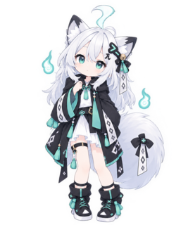

案

🔍 動き
- 動き 設定 › 演出
- 動きを「減らす」にする 設定 › 演出
- 書き上げる速さ 設定 › 演出
設定の項目名と説明の1行でも当たる。⌘, は前回のページ（演出）から開く。
設定
見た目
あなた保存先
~/.tsukumo/state.json・どのブラウザで開いても同じカスタムの色地・領域・字の3色を 16 進で決める
地の色画面のいちばん奥の色
領域の色紙・入力欄・パネルの地
字の色本文の字。地との差が足りないと警告を出す
背景の暗さ背景の絵に掛ける暗幕。既定はキャラクターのパックの値（75%）
パネルのぼかしパネルの後ろの背景をぼかす量（既定 8px）
パネルの濃さパネルの地の不透明さ（既定 45%）
新しいセッション
あなた保存先
~/.tsukumo/state.json・次に始めるセッションから効くモデル新しいセッションで最初に使うモデル。入力欄でセッションごとに変えられる
effort（考える深さ）深いほど答えが遅く、使用量も増える
許可モードファイルの書き換えやコマンドを、聞いてから行うか自動で判定するか
図の既定レポートに図を置くか、文を主にするか
裏方のモデル画面の小さな文を作るモデル（4件・既定のままでよい）
おすすめサイドバーの「次のタスク」の理由の文
迎えの一言起動したときにキャラクターが言う一言
雑談の記憶の整理雑談のあらすじと「覚えたこと」をまとめる
キャラクターの生成キャラ画面で新しいキャラクターを作る
演出
あなた保存先
~/.tsukumo/state.json
書き上げる速さレポートとセリフを書き上げる演出の速さ
動き立ち絵や点々の常時の動き
話しかける間合い
待ちの一言きみが黙っているとき、次の一手を言うまでの間
進み具合の催促長い作業で、様子を言うよう促すまでの間
タスクの実行
あなた保存先
~/.tsukumo/state.json起動するスキルタスクの実行で呼ぶスキル。未設定なら「タスク GH-xxxx を進めて」と送る
ワークフロー
このリポジトリ保存先
.tw/config.toml・リポジトリに入り、ほかの人にも効く流れタスクの段を進める流れ。plugin のワークフロースクリプト task-flow
並び（上から順に進める）
1 実装→2 受け入れ→3 振り返り（外した）
振り返り受け入れのあとに改善の候補を探す段
「」で探した結果
ワークフローの変更が保存されていない
.tw/config.toml へまだ書いていない変更が1件ある。